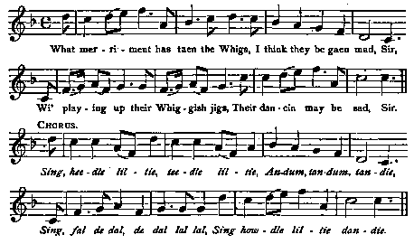

What merriment has ta'en the Whigs?
Qu'est ce qui rend si gais les Whigs?
Short version from Burns's MS entitled "The German Lairdie"
Followed by a long version from "The True Loyalist" (1779)
Tiré du manuscrit de Burns intitulé "Le petit Lord allemand"
Suivi d'une version longue extraite du "Vrai Loyaliste" (1779)
Tune - Mélodie
"The German Lairdie"
corrected from Burns's MS
Sequenced by Christian Souchon

|
To the tune:
"From Burns's MS. in the British Museum, entitled 'The German lairdie', which is referred to, in 'Gray's MS. Lists'. The verses were sent to (the editor) Johnson, but were not inserted in his 'Museum'. The tune from the MS. of Burns, now in the possession of John Adamson, Esq., of Brook-lands, Dumfries, is not in any printed collection, is quite unknown, and is now printed for the first time. The music in the MS. is obviously imperfect, and wants two bars in each of the two sections to complete the rhythm. These I (the author of the comments in 'Complete Songs of Robert Burns Online Book') have added by repeating the fifth bar and doubling the measure of the sixth in each of the two sections." Source "The Complete Songs of Robert Burns Online Book" (cf. liens). |
A propos de la mélodie:
"Ce chant provient du manuscrit de Burns conservé au British Muséum et intitulé 'Le petit laird allemand', auquel il est fait référence dans les 'Listes de manuscrits de Gray', sans pour autant qu'il figure au 'Musée Musical Ecossais'. La mélodie tirée du manuscrit de Burns appartenant à M. John Adamson de Brooklands en Dumfries, ne se retrouve sur aucun recueil imprimé. Elle n'est connue de personne et est publiée ici (sur 'Complete Burns Songs') pour la première fois. A l'évidence elle était imparfaite et il a fallu ajouter 2 mesures à chaque partie pour une question de rythme. J' (le rédacteur des commentaires du site) y ai suppléé en répétant la 5ème mesure et en redoublant la sixième mesure dans chacune des deux parties." Source "The Complete Songs of Robert Burns Online Book" (cf. liens). |
1° What Merriment has ta'en the Whigs?
From Burns's MS

|
WHAT MERRIMENT HAS TA'EN THE WHIGS ?
1.What merriment has taen the Whigs I think they be gaen mad, Sir, Wi' playing up their Whiggish jigs, Their dancin may be sad, Sir. Chorus. Sing needle liltie, teedle liltie, Andum, tandum, tandie, Sing fal de dal, de dal lal lal, Sing howdle liltie dandie. Source: "Complete Songs of Robert Burns Online Book" (cf. liens). |
QU'EST-CE QUI REND SI GAIS LES WHIGS ?
1. Qu'est ce qui rend si gais les Whigs? Ont-ils perdus la tête, Pour jouer ainsi leurs propres gigues? Cette danse m'inquiète. Refrain. Sing needle liltie, teedle liltie, Andum, tandum, tandie, Sing fal de dal, de dal lal lal, Sing howdle liltie dandie. (Trad. Christian Souchon(c)2010) |
2° The Germain Lairdie
From the "True Loyalist" (1779)
|
THE GERMAN LAIRDIE
1. What merriment has ta'en our W[hig]s? I think they're all gone mad, sir, By playing up their Whiggish jigs, Their dancing may be sad, sir. The revolution principles Have put their heads in the bees, Sir; They've a' fa'n out amang themselves, Duce take the first that grees, Sir! Sing, hey tidle lilty, &c. 2. Did ye not say, on Queen Anne's day, They vow'd and did protest, sir, If once Hanover was come o'er, We surely would be blest, Sir ? He would bring goud and gear enough, Which wou'd pay a' our debts, Sir, We'd then want men to hold our plough, Such worldly wealth we'd get, Sir. Sing, hey tidle lilty, &c. 3. Then he came o'er with his cock son O! Duce confound the pair, Sir, For a' the gear that they brought o'er, One plack they couldn't spare, Sir: For ilka plack we but pay down For whores to lye at's back, Sir; And Turks to gard the British crown: O! Duce confound the pack! Sir. Sing, hey tidle lilty, &c. 4. Let men of honest principles Now stand to the righteous cause, Sir; And, down with their rank parliaments, Set up our righteous laws, Sir: Restore to them their Brunswick K[in]g; Great joy to Ceasar, sing, Sir: The Duce confound their spurious brood! And crown our righteous K[in]g, Sir. Sing, hey tidle lilty, &c. 5. And wha think ye had they got then But a wee poor Germain Lairdie; And when then went to bring him o'er, He was delving his kail-yardie. Sing, hey tidle lilty, &c. Source: "The True Loyalist" or "Chevalier's Favourite", Page 8, 1779. |
LE PETIT LAIRD ALLEMAND
1. A quoi s'amusent donc nos Whigs? D'où vient cette démence? Quand leurs musiciens jouent leurs gigues, Ce sont de tristes danses. Enfants de la révolution, Leur tête est comme un sistre: Ils sont en proie aux dissensions. Gare à qui s'en attriste! Sing, hey tidle lilty, etc. 2. N'ont-ils pas juré leurs grands dieux, Du temps qu'Anne était reine; Que tout irait ici bien mieux Pourvu qu'Hanovre vienne? De nos dettes et créanciers Ses trésors nous libèrent; D'autres bras viendront labourer Tant nous serons prospères. Sing, hey tidle lilty, etc. 3. Il vint donc avec son bâtard: Cette paire infernale N'épargna pas même un liard Malgré ses grosses malles: Nous n'avons plus qu'à débourser Pour nourrir ses maîtresses Et les Turcs chargé de garder La couronne traîtresse. Sing, hey tidle lilty, etc. 4. Que se dresse notre parti Servant la juste cause! Plus de parlements de nantis! Que le vrai droit s'impose! Que Brunswick recouvre son roi, Ma foi, grand bien lui fasse! Au diable, ce roi d'opéra! Au vrai roi faites place! Sing, hey tidle lilty, etc. 5. Qui pensez-vous qu'ils ont eu? Un petit lord tudesque Qui plantait lorsqu'ils sont venus Ses choux avec sa bêche. Sing, hey tidle lilty, etc. (Trad. Christian Souchon (c) 2010) |
|
The song in Burns's MS is evidently identical with the first 4 four lines and the chorus of the song in the "True Loyalist".
In Hogg's Jacobite Relics -Vol. I, 1819, N°87 is a song of twelve stanzas , without a chorus, beginning: What murrain now has taen the Whigs? . It has 12 lines in common with the previous song, with some slight variations. The well-known popular song 'The wee, wee German lairdie' , partly if not entirely written by Allan Cunningham for Cromek's spurious 'Antique Nithsdale and Galloway Songs' in 1810, has no resemblance to the preceding songs, except three lines in the first stanza that are found in the 5th stanza of "What merriment": But a wee wee German lairdie And when we gaed to bring him hame He was delving in his kail yairdie. Hogg states in a note that the song "The wee Germain Lairdie" "is copied from Cromek, all save three lines taken from an older collection" . Very likely he means the "True Loyalist". |
Le chant tiré du manuscrit de Burns se compose des 4 premières lignes et du refrain de celui du "Vrai loyaliste".
Dans les "Reliques Jacobite -Vol. I" de Hogg, 1819, N°87 figure un chant de 12 strophes , sans refrain, qui commence par: Quelle mouche a piqué les Whigs? . A quelques détails près, il a 12 vers en commun avec le texte précédent. Le chant bien connu, 'Le petit, petit lord teuton' , que l'on doit en partie, sinon en entier, à la plume d' Allan Cunningham et qui figure dans le recueil de 'Chants (prétendument) anciens de Nithsdale et Galloway' de Cromek, 1810, n'a rien à voir avec les chants précédents, si ce n'est trois vers du 1er couplet qu'on retrouve presque tels quels dans "Le Vrai Loyaliste": Un petit, petit lord teuton! Et quand on l'amena chez nous, Il était à planter ses choux. Hogg indique à propos du "Petit lord teuton", que ce chant "est tiré de Cromeck et provient, hormis 3 lignes, d'un recueil plus ancien" . On peut penser qu'il s'agit du "Vrai Loyaliste". |